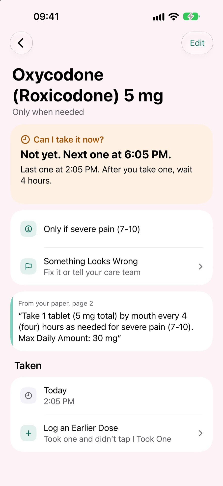
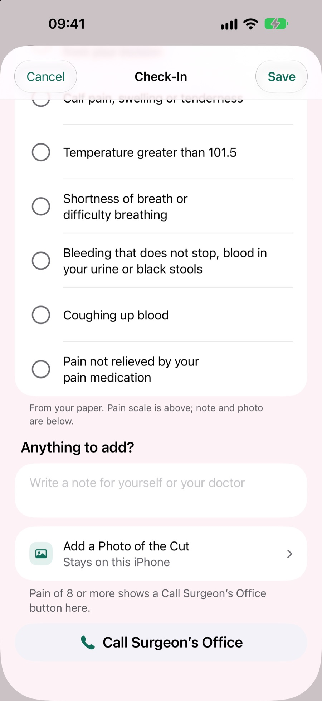
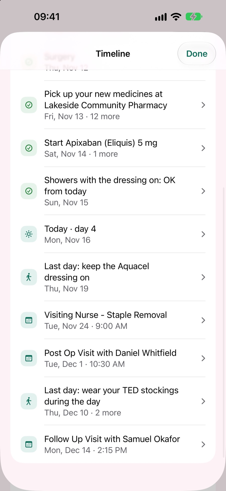
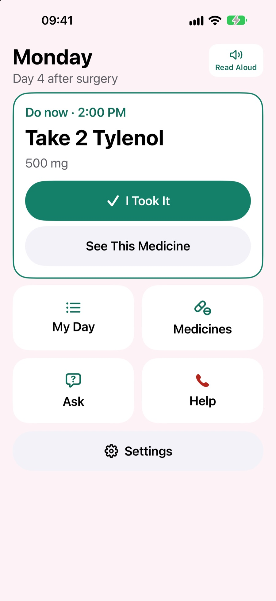

For iPhone, before and after surgery
For iPhone, before and after surgery
Surgery papers, turned into a plan for each day.
Remedy reads the pages a patient brings home, checks them against each other, and shows what to do today, one step at a time.
Shown: Ruth, a made-up patient, 4 days after knee replacement, with her four sample papers.
Paper instructions break down at home.
-
40–80%
of what a doctor tells a patient is forgotten almost right away.
Kessels, J R Soc Med, 2003 -
43%
of patients correctly recalled their medicine changes one to two days after discharge. 90% felt sure they knew.
Jt Comm J Qual Patient Saf, 2023 -
19%
of patients had an adverse event after leaving the hospital. Two thirds of those were caused by medicines.
Forster et al., CMAJ, 2004
Before surgery it gets harder: the surgeon, a family doctor and a heart doctor may each send a page, and they don't always agree.
How it works
Add the papers, check each line, then follow the plan. New papers can join at any time.
-
Add the papers
Scan with the camera, pick photos or PDFs, or import from MyChart. Names are blacked out on the phone first.
-
Check each line
Every item shows the paper's exact words. Nothing joins the plan until the patient taps This Is Right.
-
Follow the day
Doses, stop days, visits and check-ins arrive on time, with reminders, Calendar and widgets.
See the app
Real screens from Ruth's demo plan. Tap any one.







Built so it can't guess.
AI reads the pages. Doses, days and which paper to follow come from fixed rules with automated tests.
No AI medical calls
AI never sets a dose, a day or which paper wins.
Disagreements stay visible
Remedy shows both papers' words and asks the patient to call.
The patient confirms
Each item is checked against its quote before it joins the plan.
Private by default
Reading can stay on the iPhone. Names are hidden before any page leaves it.
What clinicians at Hospital for Special Surgery said
My patients struggle to recall what they should do with their medications; this will be so helpful!
Hospital for Special Surgery I often have patients who sit in my office and manually enter the dates into their calendar. This does it for them! Brilliant!!
Hospital for Special Surgery The safety of our surgeries and anesthesia often relies on patients timing their medications correctly. This is a fantastic tool!
Hospital for Special Surgery
Bring Remedy to your patients.
Write to us about a pilot or trial, or book a live walkthrough with the sample patient.